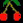

A - UP Z - DOWN N - LEFT M - RIGHT |
-
Points are scored as follows:
| 10 | |
| 10 | |
| 50, 100, 150, 200* | |
|  or | 250 |
* The amount you get for a ghost increases by 50 for each ghost you eat on that powerpill. The amount starts at 50 each time a new powerpill is eaten.
Each time you lose a life you will additionally lose 50 points.
In addition, extra lives are granted at 5000 and 10000 points.
This game was written originally for Internet Explorer 4, and Netscape Communicator 4 in 1998/1999! I discovered recently it still runs in Internet Explorer later versions, and I updated the code to run in Firefox and Google Chrome. I have tested this version in Firefox, Chrome and IE6 only so Im not sure what other browsers it still supports. That said, I've dug this version out from an old computer and I don't think this was the final one that ran in Netscape anyway as it goes. I remember one small bug in that browser that I did fix, and Im pretty sure this isn't the fixed version. But who knows.
I've also made a few code changes - got rid of the 'alert' dialogue boxes when you lose a life and replaced them with some pop ups which look better.
Bugs and Known Oddities: Yes there are a couple. Firefox doesn't seem to be able to refresh the screen fast enough and occasionally halts for a split second before catching up. And once in a blue moon, you can pass through a ghost. Will look at this at some point.